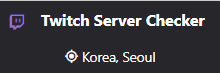
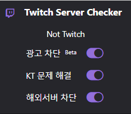

목차
버퍼?
1. KT의 해외망 문제이다? NO
KT의 해외망은 문제가 없으며, 한국에 서버가 없는경우에도 원활히 접속이 가능하다.
패킷 손실량과 반응속도 측정시 문제가 전혀없습니다.
2. Goodbyedpi를 사용하면 버퍼가 사라진다? NO
해당 기능은 패킷의 일부를 변환시키는 기능인데 IP를 바꿀수있는게 아니다.
IP를 기반으로 버퍼걸리는 서버에 배정하므로 영향이 전혀 없다.
3. 시크릿모드로 접속하면 버퍼가 사라진다? NO
마찬가지로, IP를 바꿔주지 못한다.
근본적으로 서버배정은 IP를 통해서 배정하게 된다.
따라서 버퍼가 안걸리게 바꿀수 없습니다.
4. 팝업플레이어 (또는 멀티트위치)로 보면 버퍼가 사라진다? NO
팝업플레이어로 볼때의 차이는 채팅을 표시하지 않는 차이 뿐이다.
채팅문제가 아닌경우 팝업플레이어나 멀티트위치(팝업플레이어와 동일)에서 문제가 해결되지않는다.
기능
1. 한글에서만 "생방송" 표기가 세로로 되던 문제를 해결해줍니다. 기능에서 제거

| 실행 이미지 | |
|---|---|
기본 버전 |
Pro 버전 |
2. 서버 위치를 확인해줍니다.
3. 광고차단 βeta (Pro 버전) : 모든 광고를 제거하지는 못합니다.
4. =>KT 버퍼 해결(Pro 버전 : 크롬) : 버퍼걸리는 서버에서 원래의 서버로 변경
Q. VPN으로도 한국서버 설정이 가능한데 차이가 뭔가요?
A. VPN은 VPN서버의 속도에 영향을 받습니다.
* 트위치서버 <-> VPN서버 <-> 사용자 ( vpn의 속도에 영향 )
또 vpn을 사용해도 Slow Server에 걸릴수있습니다. (사용한 의미가 없을수있음)
* 트위치서버(slow) <-> VPN서버 <-> 사용자 ( 버퍼 )
반면에 Pro버전은 사용자의 환경에서 트위치 서버와 직접적으로 연결을 해주기 때문에 기존 스트리밍과 동일하게 처리됩니다.
* 트위치서버 <-> 사용자 ( 지연시간의 감소 )
Q. 다른통신사도 이용이 가능한가요?
A. 현재는 무료 프로그램에서 위치가 Slow Server 로 뜨는경우에만 이용가능합니다.